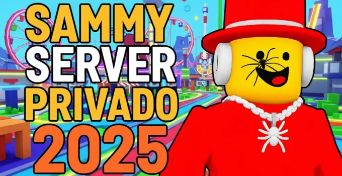

Nuevo Servidor Privado De Sammy Gratis 2025
La experiencia de Roblox que está revolucionando a la comunidad de jugadores 🎮
Roblox nunca deja de sorprendernos. Cada año surgen nuevas formas de jugar, pero en 2025 llega una de las noticias más emocionantes para la comunidad: un nuevo servidor privado gratuito de Roblox que promete unir a miles de jugadores alrededor del mundo 🌎.
🎮 ¿Qué es un servidor privado en Roblox?
Un servidor privado en Roblox es un espacio exclusivo donde los jugadores pueden conectarse y disfrutar experiencias únicas, diferentes a las partidas públicas. Estos servidores pueden ofrecer:
- 🌲 Mapas de supervivencia
- 🏗️ Juegos creativos
- ☁️ Experiencias tipo obby o parkour
- ⚔️ Batallas PvP / PvE
- 🎯 Minijuegos
🆓 ¿Por qué este servidor es gratis?
A diferencia de otros servidores VIP, este proyecto busca democratizar el acceso. Su misión es que cualquier persona pueda disfrutar de todas las modalidades sin gastar Robux 💎.
- ✔️ Patrocinadores que financian los recursos
- ✔️ Optimización para reducir costos
- ✔️ Comunidad activa con donaciones opcionales
🚀 Características principales
- 100% Gratis – sin necesidad de pagar Robux
- Anti-Lag Avanzado ⚡
- Accesible desde PC, móvil y consola 🎮
- Minijuegos exclusivos 🏆
- Eventos semanales 📅
- Tienda de recompensas gratis 🎁
- Soporte 24/7 🤝
🌐 Cómo unirse
Unirse es muy sencillo, sigue estos pasos:
- Abre Roblox en tu dispositivo
- Ve a la sección Servidores privados
- Introduce el código de invitación:
sammy-servidor-2025 - Haz clic en Unirse 🎉